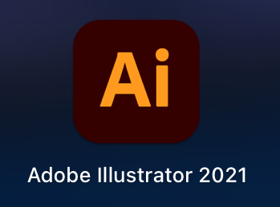
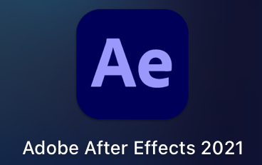
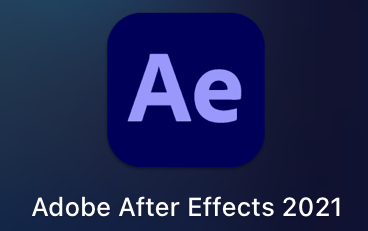

プロジェクト概要（4月9日、4月25日改訂）
娯楽による
「わびさび」の概念を取り入れたエンタメ制作
・わびさびの定義
わび→「さび」の肯定的に受け入れること
さび→古びて味わいのあること
わびさびとは「さび」という欠如を趣として面白がる「わび」という心理的な働きの一連の流れを指す。
ここでいう欠如は、時間の経過による綻びや未完の状態などが挙げられる。
・なぜわびさびの概念を取り入れるか
わびさびの特徴である欠如は、本来、作品には認められないが、わびさびの世界ではあえて取り入れられる。
その理由として見る側の想像力の刺激がある
（欠如がある不十分な作りによって違和感を覚えるのだが、その違和感を解釈しようと想像力が働くため）。
技術面
それに伴いやるべきことは、Adobeのアプリを使用するため、使用方法を理解しておくことです。

 
